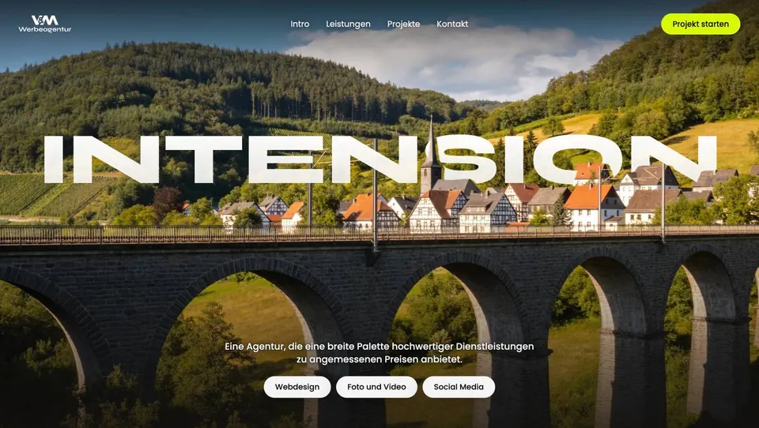
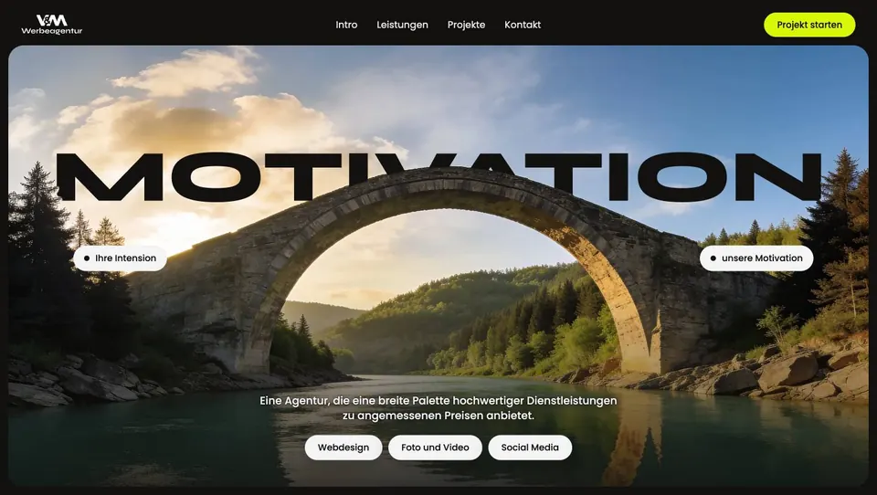
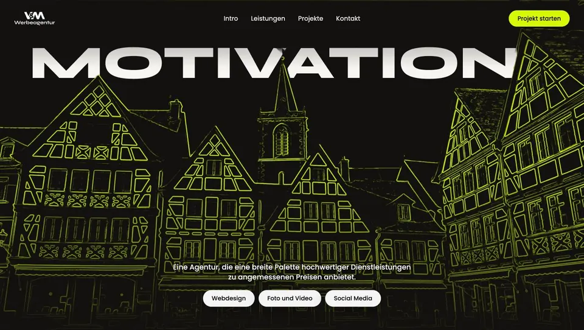
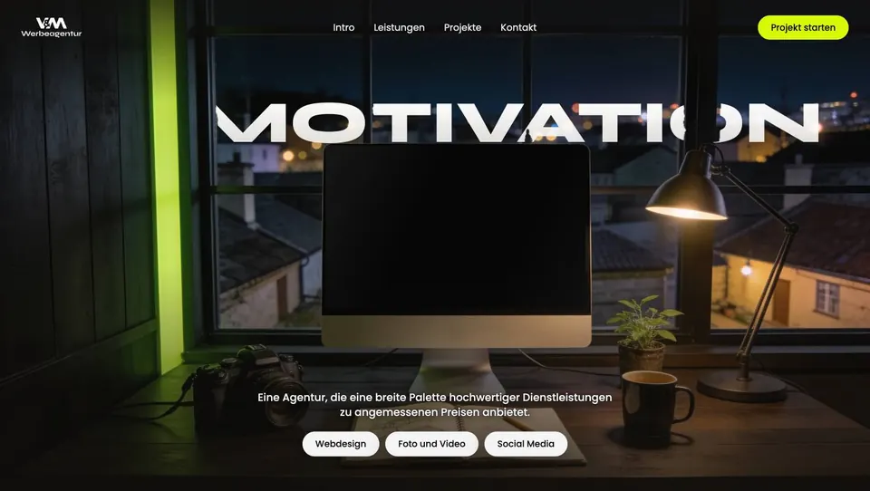
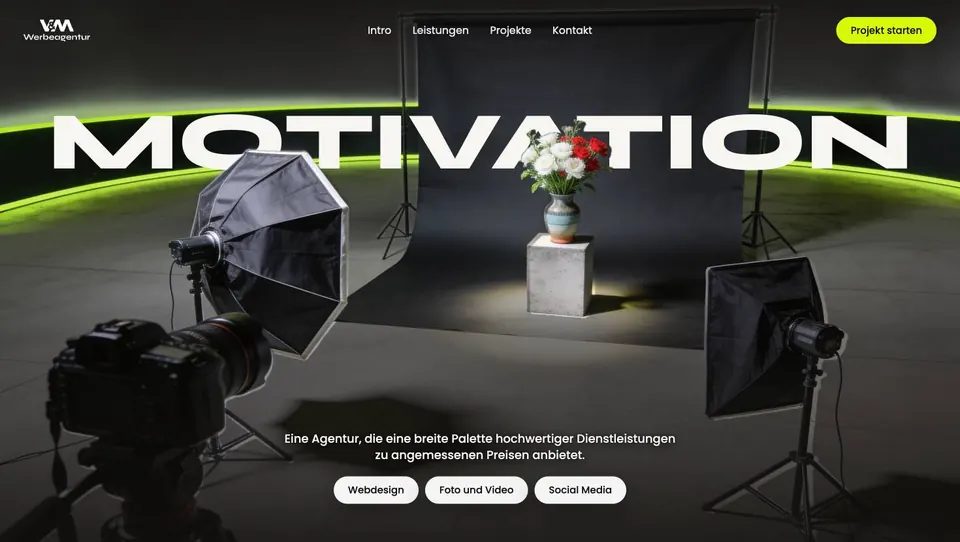
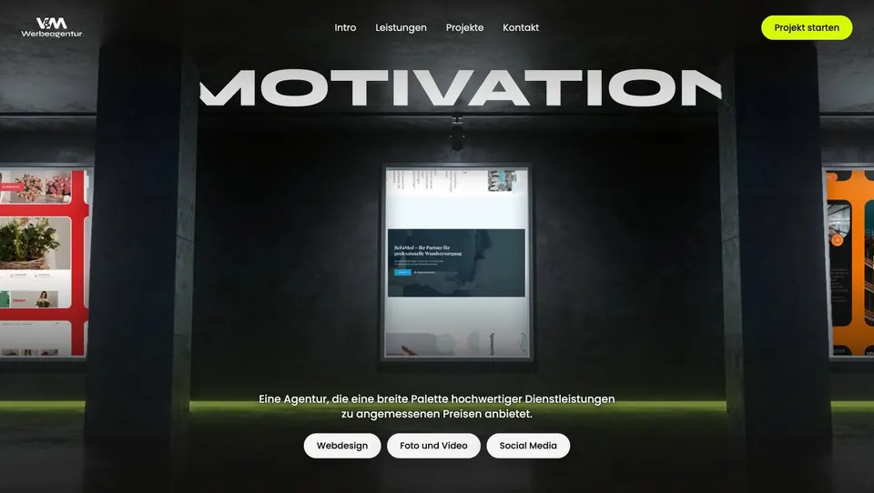

Sechs Entwürfe
Jeder Entwurf ist eine animierte Startseite: einfach öffnen und scrollen. Die Szenen sind KI-generiert und dienen nur zur Vorschau; für die finale Version nehmen wir Ihre Fotos oder echte Orte.
Licht und Landschaft A-C · nah an Mostar

ATagwerk
Tag am Anfang, beim Scrollen wird es Nacht: «Intension» geht hinter dem Dorf unter, «Motivation» geht in Ihrem Grün auf.

BBrücke
Wie Mostar: ein Bogen, das Wort dahinter. Die Kamera fährt unter dem Bogen durch zu Ihren Projekten.

CSchicht für Schicht
Die Szene entsteht beim Scrollen: Skizze, Plakat, Raster, Foto, Website. Jede Ebene ist eine Leistung.
Im Stil Ihrer Website D-F · dunkel, Grün, ohne Natur

DWerkstatt
Nachts in der Werkstatt: die Kamera fährt in den Bildschirm, dort laufen Ihre Projekte.

EAm Set
Ein Shooting-Tag: durch den Sucher, scharfstellen, auslösen. Das Foto wird zur Projektkarte.

FGalerie
Ihre Projekte als Ausstellung: die Kamera geht an der Wand entlang von Werk zu Werk.
Entwürfe für den Computer. Die Version für Smartphone und Tablet folgt für den gewählten Entwurf.